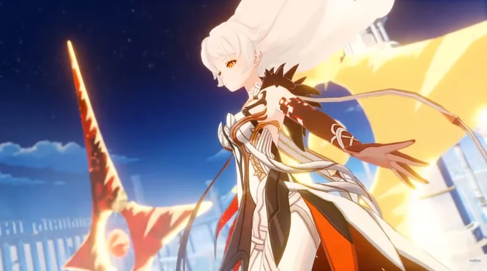
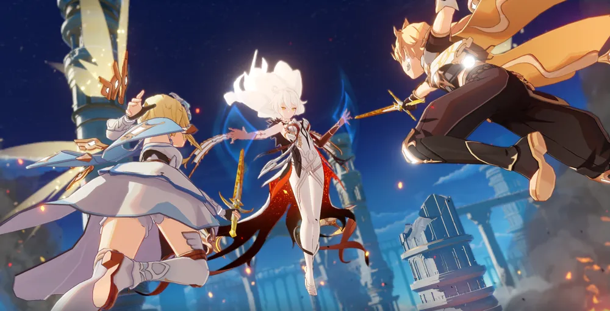

첫 시작은 페이몬 이 과거를 들려주는 여행자에게 질문하는 것으로 시작된다. 쌍둥이 남매는 여러 세계를 건너 이곳 저곳을 여행하고 다니는 '여행자' 였다.
남매는 우연히 티바트를 지나 다음 세계로 넘어가려 했었다스스로를 '천리의 주관자'라 부르는 여신이 나타나면서 쌍둥이의 앞을 가로막는다.
플레이어는 쌍둥이 중 한 명을 주인공으로 선택하게 되며 짧은 혈투 끝에 천리의 주관자는 결국 쌍둥이 중 플레이어에게 선택받지 못한 한 명을 납치하게 되고 선택받은 한 명에게도 무기와 힘을 빼앗아 티바트 어딘가에 봉인시켜 버린다.